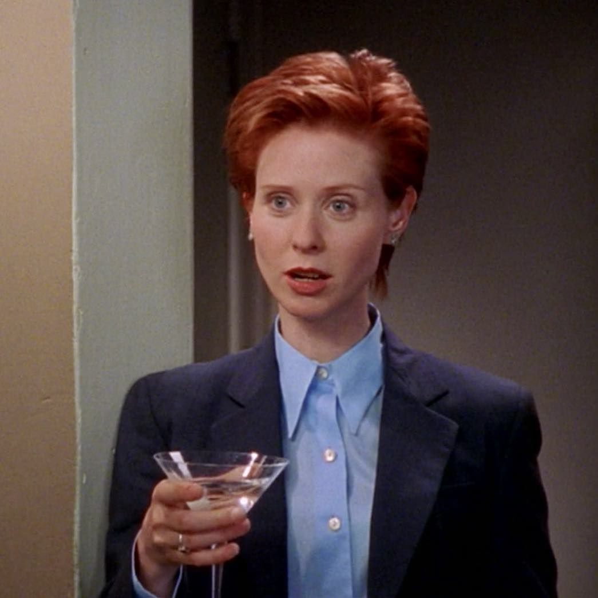
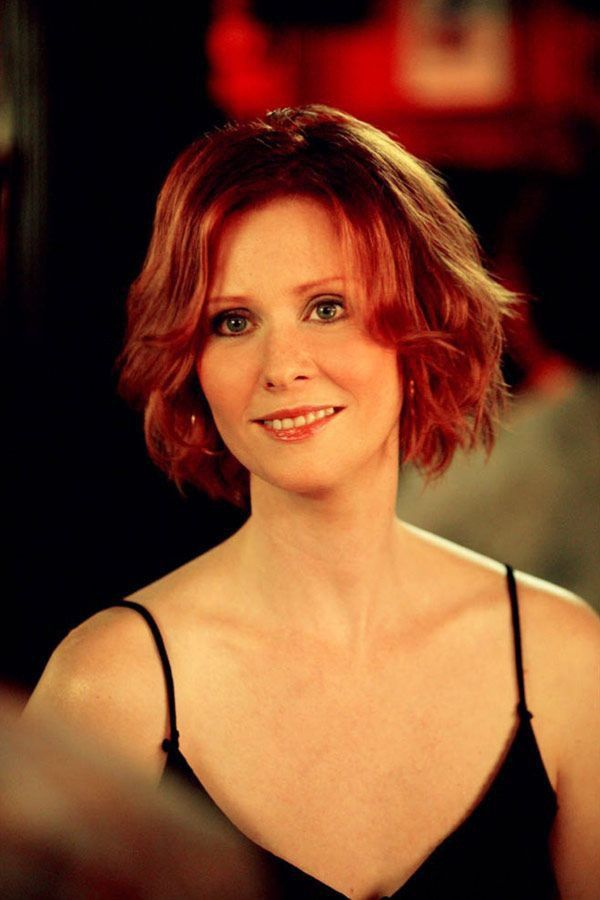
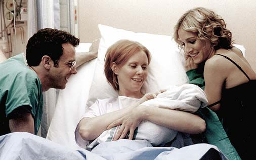
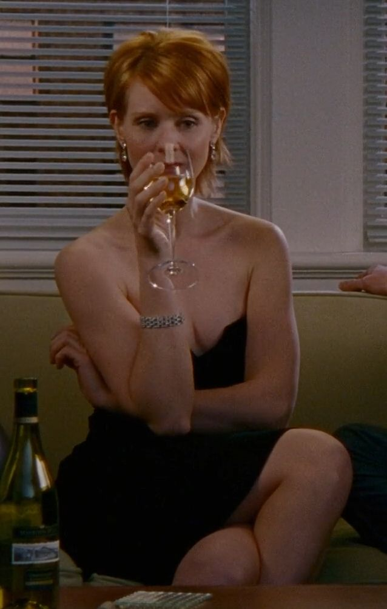

Miranda Hobbes
Toca el nombre

Miranda es abogada y la más racional del grupo. Al principio desconfía del amor y del matrimonio, y su humor directo y sarcástico equilibra el idealismo de sus amigas.
Su relación con Steve y el nacimiento de su hijo Brady la obligan a replantear el control que siempre quiso tener sobre su vida, incluyendo su mudanza a Brooklyn.


